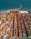

Informações sobre Lisboa
Lisboa é a capital de Portugal, localizada na região central do país. É conhecida pela sua história, arquitetura e cultura vibrante.

Demografia e Geografia
| Demografia | Geografia | |
|---|---|---|
| População | 506.892 hab | |
| Área | 100km² | Lisboa |
| Região | Lisboa | Portugal |

Gastronomia
Lisboa possui uma rica tradição gastronómica, desde os pastéis de nata até pratos de peixe fresco.
Monumentos
Lisboa tem monumentos emblemáticos, como a Torre de Belém e o Mosteiro dos Jerónimos.
Transportes
O elétrico 28 é um dos transportes mais icónicos, e a cidade tem uma boa rede de metro e autocarros.

Cinco Curiosidades sobre Lisboa
- Lisboa é uma das cidades mais antigas da Europa, com história desde o século 2 a.C.
- A Torre de Belém foi construída no século XVI como defesa da cidade.
- O Elétrico 28 é um dos transportes mais emblemáticos de Lisboa.
- A cidade tem vários miradouros com vistas incríveis do rio Tejo.
- Lisboa possui uma das maiores coleções de azulejos do mundo.

Miradouros
Lisboa tem vários miradouros que oferecem vistas panorâmicas incríveis sobre a cidade e o rio Tejo.